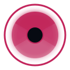

Open Your Camera
Buka kamera langsung dari browser, tanpa perlu instalasi aplikasi.

Preparing Your Smart Camera
Buka kamera langsung dari browser, tanpa perlu instalasi aplikasi.
Tunjukkan emotemu ✌🏻 ke kamera dan sistem akan mengaktifkan efek blur secara otomatis.
Ambil foto dengan efek blur, filter, dan resolusi yang sudah kamu atur sendiri.
Blur Snap membutuhkan akses kamera untuk mendeteksi gesture dan mengambil foto. Aktifkan izin kamera pada browser kamu.
Perangkat atau browser kamu tidak mendukung akses kamera. Gunakan Chrome, Edge, Firefox, atau Safari versi terbaru.
Menyalakan kamera…
Atur tampilan kamera secara real-time.
Semua hasil jepretan tersimpan secara lokal di perangkatmu.
Belum ada foto. Ambil jepretan pertamamu di tab Camera.
Sesuaikan pengalaman kamera sesuai kebutuhanmu.
Blur Snap by Fikarroyal · v1.0 · Privacy Policy
Apakah kamu yakin?